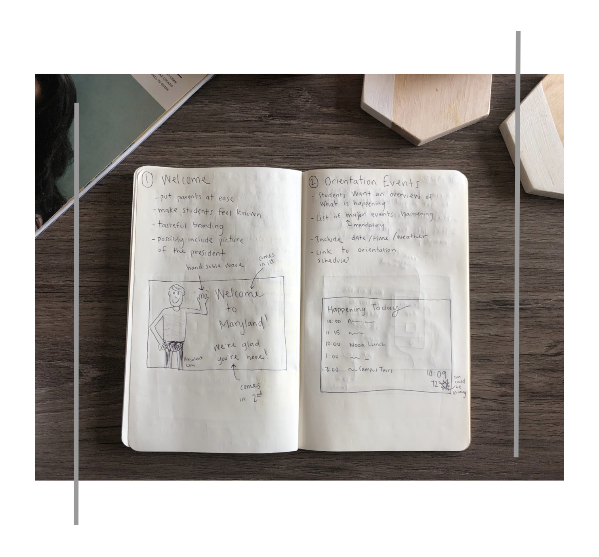
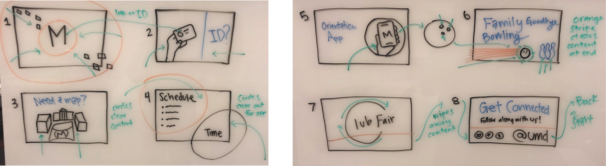
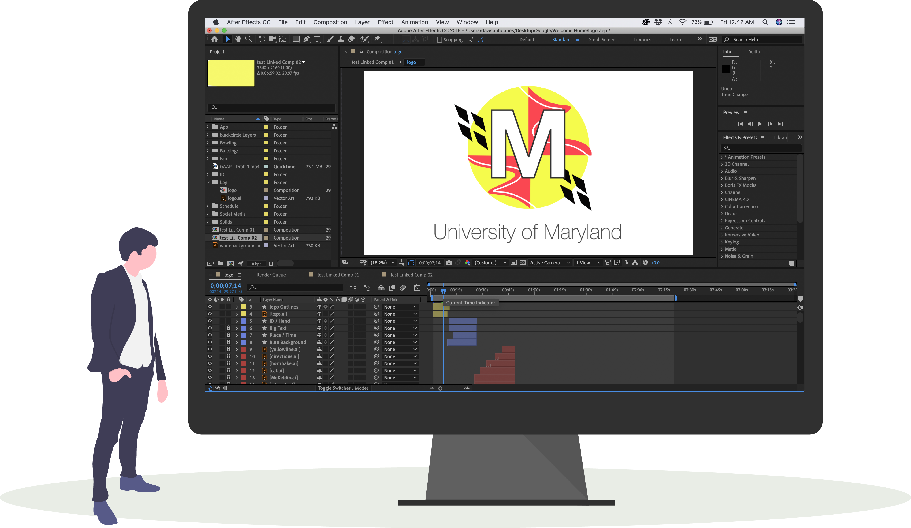
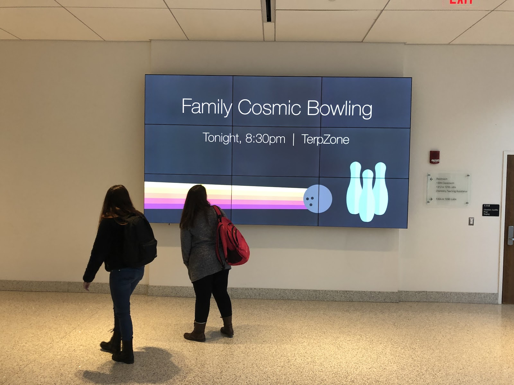
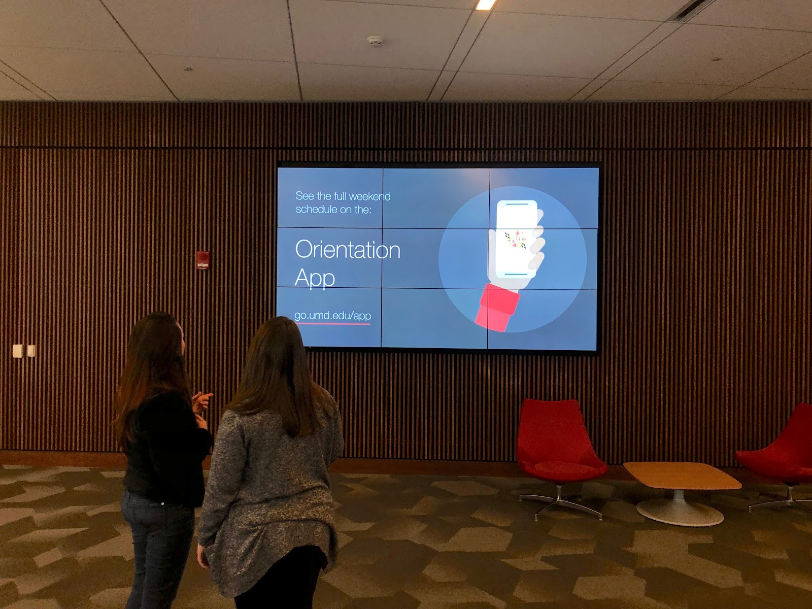

My first step with this challenge was to identify potential stakeholders, figure out their needs, and dive into their motivations. I decided the best way to gather the necessary data was to conduct a series of interviews and use that data to brainstorm content and style for the billboards.
The interviews focused around two key concepts, content and screens. I probed the participants with questions about their college orientation experience, and questions about their feelings and previous experiences with digital billboards.
After conducting all my interviews, I took the individual notes from each interview and created an affinity diagram to help pull out the big picture ideas and concepts from the data.
Watch the timelapse video below to see the process!
Based off my user interviews, I identified these key insights about the content user's want and their general feelings toward digital advertisements and screens.
Content
New students are excited to be joining the university.
Students are not sure where to find resources.
Parents and students need help finding places on campus.
Students feel confused about what events are going on.
Parents want to know how their child can get involved on campus.
A lot of FAQs were answered on the orientation app.
Screens
Too much text is distracting.
A little motion helps grab users' attention.
It is hard to pay attention to the screens while you are walking.
Low quality images and graphics deter viewer's attention.
Users want up to date information that is pertinent to them.
Brainstorming
Reviewing the research findings led to 8 ideas for relevant and helpful screen content.
The next step was putting all eight concepts onto paper and working through all the little details.

Animation Flow
An important step was taking the individual screens and thinking through how they would transition and work together to create a cohesive experience.

Build
I created all the content for the screens on Illustrator. I love illustrating, so I really enjoyed getting to put my own twist on university branding. After I finished creating the screens, I used AfterEffects to bring them to life and make transitions between each screen.

User Testing
After creating the animation loop, I was able to get access to a building at school and upload the loop onto their digital screens. I invited a few students to come interact with the content and I conducted a series of usability tests with them.


Testing Insights:
Optimal Time on Screen is 9seconds per slide
Subtle motion throughout the whole slide helps grab / keep attention
All text needs to be big enough to read from a distance
URLs need to be short and easy to remember
I was able to take these valuable insights and tweak my design before arriving at my final product.